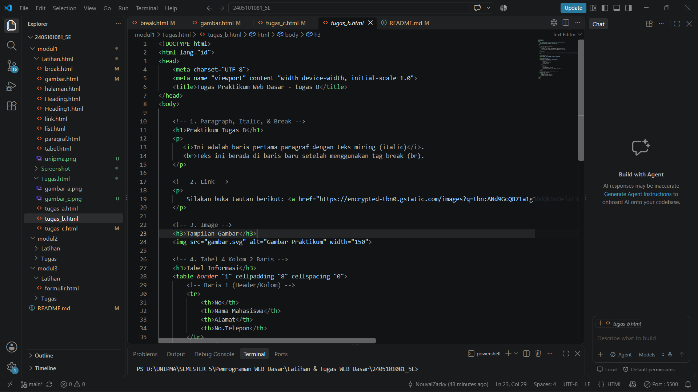

Ini adalah baris pertama paragraf dengan teks miring (italic).
Teks ini berada di baris baru setelah menggunakan tag break (br).
Silakan buka tautan berikut: Kunjungi Google.

| No | Nama Mahasiswa | Alamat | No.Telepon |
|---|---|---|---|
| 1. | Muhammad Nouval Zacky | Ds. Taji, Kec. Karas, Kab. Magetan RT03 RW02 | 085732136984 |